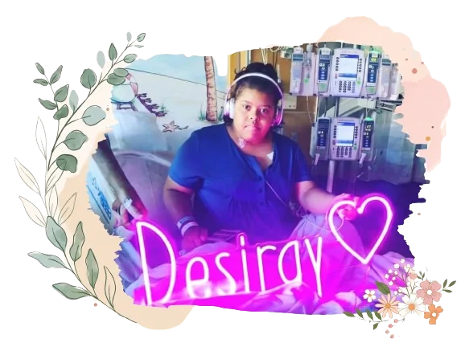
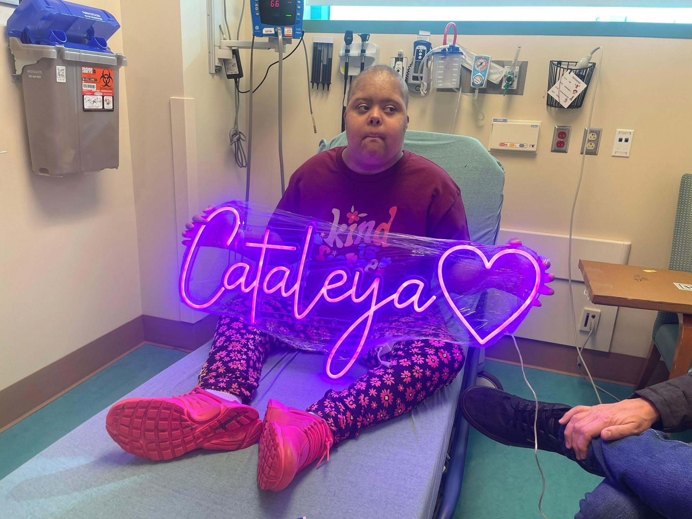
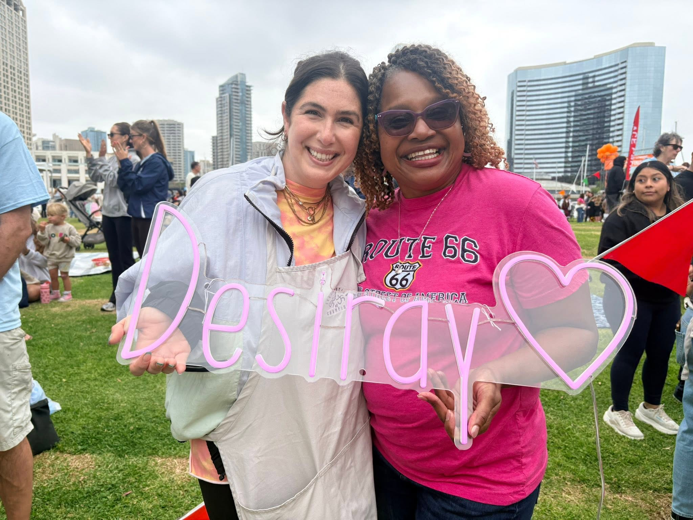

Spreading Joy,
One Bedside Light at a Time.
When a child undergoes bone marrow or stem cell transplantation, long days in sterile hospital rooms can feel overwhelming. We donate personalized 30-inch glowing LED neon signs that turn hospital bedsides into sanctuaries of warmth, courage, and unconditional love.

Meet Desiray Joy, our beloved Pink Buffalo Girl
A daughter with Down syndrome, an unshakeable spirit, and an enduring legacy of bringing light into the dark.
A Letter from Marlene
Our daughter Desiray passed away about a year after we started Desiray’s Lights of Joy. Throughout her life, Desiray lived with Down syndrome and faced intensive hospital stays, culminating in a bone marrow and stem cell transplant. Yet, through every biopsy, infusion, and isolated week, she greeted nurses and doctors with infectious laughter, gentle warmth, and boundless courage.
Desiray’s favorite color in the whole world was bright pink. During her treatment at Rady Children’s, her godmother, Ms. Robin, surprised her with a custom, glowing neon wall sign bearing her name. That pink light transformed her room — day and night, it created a cheerful sanctuary that comforted Desiray and brought smiles to every passerby and nurse in the corridor.
In our family and at Comic-Con events, Desiray became known as the “Pink Buffalo Girl” — rocking her pink checkered overalls, satin cape, and radiating fearless kindness. We founded this 501(c)(3) nonprofit to ensure that no child undergoing bone marrow or stem cell therapy has to endure a dark, sterile hospital room without their own personal beacon of hope.
With all our love and gratitude,
Marlene Davis & Family
Founders, Desiray’s Lights of Joy


From hospital admission to forever keepsake
A simple, transparent journey connecting donors directly to bedside comfort — from the first referral to the day the light goes home.
-
1
Hospital Referral
Compassionate social workers and nurses at Rady Children’s Hospital identify young warriors admitted for transplant treatment.
-
2
Personalized Design
We discover each child’s favorite color and nickname. Local artisans craft a safe, low-voltage 30″ LED neon sign tailored specifically to them.
-
3
Bedside Illumination
We deliver the light with an optional rechargeable battery so the child can keep their sign glowing even during corridor walks with IV poles.
-
4
Home Sweet Home
When treatment is completed and they ring the hospital victory bell, the neon sign travels home to hang proudly as a lifelong medal of bravery.


Bring hope to a child’s hospital room
Your charitable gift directly funds the personalized craftsmanship and hospital delivery of custom neon lights for young patients facing life-threatening conditions at Rady Children’s Hospital.
- $361
- Complete Warrior Care Set1 personalized 30″ neon sign + 1 rechargeable medical-grade battery for hallway mobility.
- $265
- Personalized 30″ Neon Sign OnlyHand-crafted with the child’s name, favorite color, and safe bedside low-voltage adapter.
- $100
- Army of Friends ContributionPool your donation with friends or coworkers to co-sponsor an upcoming patient sign.
Want zero platform processing fees? Send directly through Zelle to marlene@desirayslightsofjoy.org — or scan the QR code.
Give directly
Tax-deductible 501(c)(3) contribution — any amount welcome.
Complete Set ($361) → Neon Sign Only ($265) →Or give what you can through Zelle:
Scan to pay with Zelle:

Official 501(c)(3) tax-deductible charity
The wall of hope & love
Leave an encouraging note, prayer, or warm thought for the brave young warriors and families at Rady Children’s Hospital.
Leave a message of hope
Connect with our board
Have questions about sponsoring a patient, nominating a young warrior, or helping us expand to another hospital? We would love to hear from you.
Email Marlene directly
marlene@desirayslightsofjoy.org
Hospital partner
Rady Children’s Hospital • Pediatric Bone Marrow & Stem Cell Unit • San Diego, CA